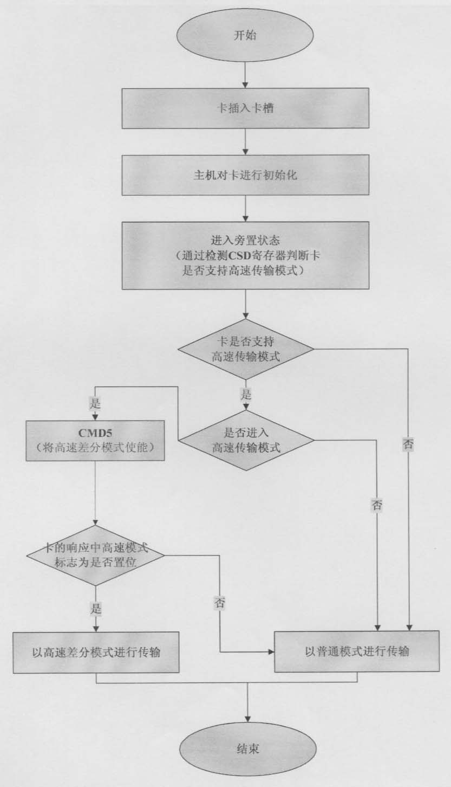

发明名称--一种提高存储卡传输速度的方法
| 申请号 | CN200610087319.8 | 申请日 | 2006.06.07 | ||
| 公开（公告）号 | CN101086723A | 公开（公告）日 | 2007.12.12 | ||
| IPC分类号 | G06F13/38 | 申请（专利权）人 | 普天信息技术研究院; | ||
| 发明人 | 曹会扬; | 优先权号 |
摘要:
本发明公开了一种提高存储卡传输速度的方法，该方法执行如下操作：在普通存储卡的背面进行管脚扩展；在普通存储卡的插槽上也增加相应的接触点；在普通存储卡的总线驱动电路中加入差分比较器、高速差分传输通路和控制信号，在控制逻辑中加入新的子集；在普通存储卡的传输命令列表中加入用来切换存储卡的普通传输模式和高速差分传输模式的命令；在普通存储卡的状态寄存器中添加相应比特位，以表示存储卡是工作在普通传输模式还是高速差分传输模式下；在普通存储卡的CSD寄存器中增加相应的标志位，以表示存储卡是否支持高速差分传输模式。本发明提高了存储卡的数据传输速率，实现了存储卡普通传输模式和高速差分传输模式的识别机制和切换机制。
摘要附图:
